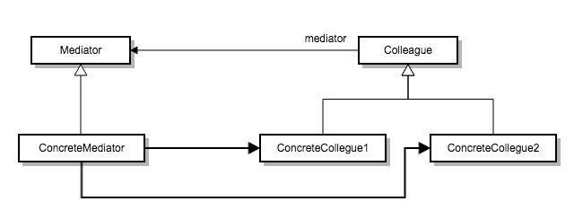

한 집합에 속해 있는 객체의 상호작용을 캡슐화하는 객체를 정의합니다.
객체들이 직접 서로를 참조하지 않도록 하여 객체 사이의 소결합을 촉진시키며, 개발자가 객체의 상호작용을 독립적으로 다양화시킬 수 있게 만듭니다.
객체지향 개발 방법론에서는 행동을 여러 객체에게 분산시켜 처리하도록 권하고 있습니다. 이러한 행동의 분산으로 객체 구조는 수많은 연결 관계가 객체 사이에
존재하는 모습이 됩니다. 게다가, 시스템은 자신의 행동을 처리하기 위해 다른 모든 객체에 대한 참조자를 관리해야 하는 최악의 상황에 직면할지도 모릅니다.
물론 시스템을 여러 객체로 분할하게 되면 객체의 재사용을 증대 시킬 수 있습니다. 그러나 이러한 시스템의 객체 분할이 객체 간 상호작용의 급증을 유발하고 이 때문에
재 사용성이 저하될 수도 있습니다. 또한 어떤 일 하나를 처리하기 위해서도 수많은 상호작용은 필요하므로 객체는 독립적이어야 한다는 객체의 특성이 유명무실해져 버릴 수 있습니다.
분할 했다고는 하지만 시스템은 하나의 거대한 덩어리 처럼 동작해야 합니다.
예 ) 그래픽 사용자 인터페이스 안의 대화상자를 구현하는 예제

여러 객체가 잘 정의된 형태이기는 하지만 복잡한 상호작용을 가질 때. 객체 간의 의존성이 구조화되지 않으며, 잘 이해하기 어려울 때
한 객체가 다른 객체를 너무 많이 참조하고, 너무 많은 의사소통을 수행해서 그 객체를 재사용하기 힘들 때
여러 클래스에 분산된 행동들이 상속 없이 상황에 맞게 수정되어야 할 때
Mediator
DialogDirector
Colleague 객체와 교류하는 데 필요한 인터페이스를 정의합니다.
ConcreteMediator
FontDialogDirector
Colleague 객체와 조화를 이뤄서 협력 행동을 구현하며, 자신이 맡은 동료(Colleague)를 파악하고 관리합니다.
Colleague 클래스들
ListBox, EntryField
자신의 중재자 객체가 무엇인지 파악합니다. 다른 객체와 통신이 필요하면 그 중재자를 통해 통신되도록 하는 동료 객체를 나타내는 클래스입니다.
Colleague 는 Mediator에서 요청을 송수신합니다. Mediator는 필요한 Colleague 사이에 요청을 전달할 의무가 있습니다.
서브 클래싱을 제한합니다.
중재자는 다른 객체 사이에 분산된 객체의 행동들을 하나의 객체로 국한합니다. 이 행동 들을 변경하고자 한다면 Mediator 클래스를 상속하는
서브 클래스만 만들면 됩니다. Colleague 클래스는 여전히 재사용 가능합니다.
Colleague 객체 사이의 종속성을 줄입니다.
중재자는 행동에 참여하는 객체 간의 소결합을 증진시킵니다. 이로써 Mediator 클래스와 Colleague 클래스 각각을 독립적으로 다양화시킬 수 있고
재사용할 수 있습니다.
객체 프로토콜을 단순화 합니다.
중재자는 다 대 다의 관계를 일 대 다의 관계로 축소시킵니다. 일 대 다의 관계가 훨씬 이해하기 쉬울 뿐만 아니라 유지하거나
확장하기 쉽습니다.
객체 간의 협력 방법을 추상화합니다.
객체 사이의 중재를 독립적인 개념으로 만들고 이것을 캡슐화함으로써, 사용자는 각 객체의 행동과 상관 없이 객체 간 연결 방법에만
집중할 수 있습니다. 결과적으로, 시스템에서 객체가 어떻게 동작하는지를 좀더 명확히 하는 데 도움이 됩니다.
통제가 집중됩니다.
중재자 패턴은 상호작용의 복잡한 모든 것들이 자신 내부에서만 오가게 합니다. 중재자 객체는 동료 객체 간의 상호작용에 관련된 프로토콜을
모두 캡슐화하기 때문에 어느 동료 객체보다도 훨씬 복잡해질 수 있습니다. 이 때문에 Mediator 클래스 자체의 유지보수가 어려워지게 될 때도 있습니다.